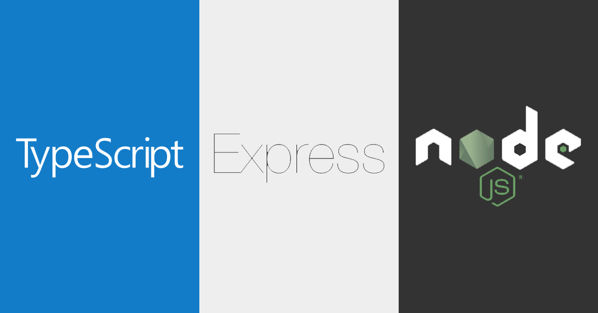

<!DOCTYPE html>
<html lang="en">
<head><meta name="generator" content="Hexo 3.9.0">
    <meta charset="utf-8">
    
    <title>Typescript + ExpressJs 시작하기 | Dongjun&#39;s Blog</title>
    <meta name="viewport" content="width=device-width, initial-scale=1, maximum-scale=1">
    <meta name="description" content="최근 Angular2.0 을 스터디 하면 Typescript를 알게 되었다. 사용하면서 모든 javascript에 적용을 시키면 정말 편할꺼 같아서 개인적으로 Restful Api 서버를 만들어 보고, 그걸을 토대로 기록을 남긴다. 시작하기 및 설정시작하기 전에 먼저 설치를 해야된다.  NodeJs 6버젼 이상을 추천한다.(es2015지원이 빵빵하다!)">
<meta name="keywords" content="expressjs,typescript,nodejs">
<meta property="og:type" content="article">
<meta property="og:title" content="Typescript + ExpressJs 시작하기">
<meta property="og:url" content="https://mayajuni.github.io/2016/06/30/typescript-express/index.html">
<meta property="og:site_name" content="Dongjun&#39;s Blog">
<meta property="og:description" content="최근 Angular2.0 을 스터디 하면 Typescript를 알게 되었다. 사용하면서 모든 javascript에 적용을 시키면 정말 편할꺼 같아서 개인적으로 Restful Api 서버를 만들어 보고, 그걸을 토대로 기록을 남긴다. 시작하기 및 설정시작하기 전에 먼저 설치를 해야된다.  NodeJs 6버젼 이상을 추천한다.(es2015지원이 빵빵하다!)">
<meta property="og:locale" content="en">
<meta property="og:image" content="https://mayajuni.github.io/2016/06/30/typescript-express/2016/06/30/typescript-express/typescript-express-nodejs.jpg">
<meta property="og:updated_time" content="2020-05-28T23:36:25.137Z">
<meta name="twitter:card" content="summary">
<meta name="twitter:title" content="Typescript + ExpressJs 시작하기">
<meta name="twitter:description" content="최근 Angular2.0 을 스터디 하면 Typescript를 알게 되었다. 사용하면서 모든 javascript에 적용을 시키면 정말 편할꺼 같아서 개인적으로 Restful Api 서버를 만들어 보고, 그걸을 토대로 기록을 남긴다. 시작하기 및 설정시작하기 전에 먼저 설치를 해야된다.  NodeJs 6버젼 이상을 추천한다.(es2015지원이 빵빵하다!)">
<meta name="twitter:image" content="https://mayajuni.github.io/2016/06/30/typescript-express/2016/06/30/typescript-express/typescript-express-nodejs.jpg">
<link rel="publisher" href="mayajuni10@gmail.com">
<meta property="fb:admins" content="100000731937646">
    
    <link rel="canonical" href="https://mayajuni.github.io/2016/06/30/typescript-express/">
    

    
        <link rel="icon" href="/css/images/favicon.ico# path to favicon">
    

    <link rel="stylesheet" href="/vendor/font-awesome/css/font-awesome.min.css">
    <link rel="stylesheet" href="/vendor/open-sans/styles.css">
    <link rel="stylesheet" href="/vendor/source-code-pro/styles.css">

    <link rel="stylesheet" href="/css/style.css">

    <script src="/vendor/jquery/2.1.3/jquery.min.js"></script>
    
    
        <link rel="stylesheet" href="/vendor/fancybox/jquery.fancybox.css">
    
    
        <script type="text/javascript">
(function(i,s,o,g,r,a,m) {i['GoogleAnalyticsObject']=r;i[r]=i[r]||function() {
(i[r].q=i[r].q||[]).push(arguments)},i[r].l=1*new Date();a=s.createElement(o),
m=s.getElementsByTagName(o)[0];a.async=1;a.src=g;m.parentNode.insertBefore(a,m)
})(window,document,'script','//www.google-analytics.com/analytics.js','ga');

ga('create', 'UA-79741974-1', 'auto');
ga('send', 'pageview');

</script>
    
    
    

</head></html>
<body>
    <div id="container">
        <header id="header">
    <div id="header-main" class="header-inner">
        <div class="outer">
            <a href="/" id="logo">
                
                <span class="site-title">Dongjun&#39;s Blog</span>
            </a>
            <nav id="main-nav">
                
                    <a class="main-nav-link" href="/archives">Archives</a>
                
                    <a class="main-nav-link" href="/about">About</a>
                
            </nav>
            
                
                <nav id="sub-nav">
                    <div class="profile" id="profile-nav">
                        <a id="profile-anchor" href="javascript:;">
                            
                            <i class="fa fa-caret-down"></i>
                        </a>
                    </div>
                </nav>
            
            <div id="search-form-wrap">

    <form class="search-form">
        <input type="text" class="ins-search-input search-form-input" placeholder="Search" />
        <button type="submit" class="search-form-submit"></button>
    </form>
    <div class="ins-search">
    <div class="ins-search-mask"></div>
    <div class="ins-search-container">
        <div class="ins-input-wrapper">
            <input type="text" class="ins-search-input" placeholder="Type something..." />
            <span class="ins-close ins-selectable"><i class="fa fa-times-circle"></i></span>
        </div>
        <div class="ins-section-wrapper">
            <div class="ins-section-container"></div>
        </div>
    </div>
</div>
<script>
(function (window) {
    var INSIGHT_CONFIG = {
        TRANSLATION: {
            POSTS: 'Posts',
            PAGES: 'Pages',
            CATEGORIES: 'Categories',
            TAGS: 'Tags',
            UNTITLED: '(Untitled)',
        },
        ROOT_URL: '/',
        CONTENT_URL: '/content.json',
    };
    window.INSIGHT_CONFIG = INSIGHT_CONFIG;
})(window);
</script>
<script src="/js/insight.js"></script>

</div>
        </div>
    </div>
    <div id="main-nav-mobile" class="header-sub header-inner">
        <table class="menu outer">
            <tr>
                
                    <td><a class="main-nav-link" href="/archives">Archives</a></td>
                
                    <td><a class="main-nav-link" href="/about">About</a></td>
                
                <td>
                    
    <div class="search-form"  style="text-align: right">
        <input type="text" class="ins-search-input search-form-input" style="width: 175px;" placeholder="Search" />
    </div>

                </td>
            </tr>
        </table>
    </div>
</header>

        <div class="outer">
            
                
            
            <section id="main"><article id="post-typescript-express" class="article article-type-post" itemscope
         itemprop="blogPost">
    <div class="article-inner">
        
        
        
        <header class="article-header">
            
    
        <h1 class="article-title" itemprop="name">
            Typescript + ExpressJs 시작하기
        </h1>
    

            <div class="article-meta">
                
    <div class="article-date">
        <i class="fa fa-calendar"></i>
        <a href="/2016/06/30/typescript-express/">
            <time datetime="2016-06-30T00:07:00.000Z" itemprop="datePublished">2016-06-30</time>
        </a>
    </div>


                
    <div class="article-category">
    	<i class="fa fa-folder"></i>
        <a class="article-category-link" href="/categories/Typescript/">Typescript</a><i class="fa fa-angle-right"></i><a class="article-category-link" href="/categories/Typescript/nodeJs/">nodeJs</a>
    </div>

                
    <div class="article-tag">
        <i class="fa fa-tag"></i>
        <a class="tag-link" href="/tags/expressjs/">expressjs</a>, <a class="tag-link" href="/tags/nodejs/">nodejs</a>, <a class="tag-link" href="/tags/typescript/">typescript</a>
    </div>

            </div>
        </header>
        
        <div class="article-entry" itemprop="articleBody">
            
            
            <p></p>
<p>최근 <a href="https://angular.io/" target="_blank" rel="noopener">Angular2.0</a> 을 스터디 하면 <a href="http://www.typescriptlang.org/" target="_blank" rel="noopener">Typescript</a>를 알게 되었다. 사용하면서 모든 javascript에 적용을 시키면 정말 편할꺼 같아서 개인적으로 Restful Api 서버를 만들어 보고, 그걸을 토대로 기록을 남긴다.</p>
<h1 id="시작하기-및-설정"><a href="#시작하기-및-설정" class="headerlink" title="시작하기 및 설정"></a>시작하기 및 설정</h1><p>시작하기 전에 먼저 설치를 해야된다.</p>
<ul>
<li><a href="https://nodejs.org/en/" target="_blank" rel="noopener">NodeJs</a> 6버젼 이상을 추천한다.(es2015지원이 빵빵하다!)</li>
<li><a href="http://www.typescriptlang.org/" target="_blank" rel="noopener">Typescript</a></li>
</ul>
<p>NodeJs는 해당 홈페이지 들어가서 다운로드를 받고 설치하면 문제 없지 진행 할 수 있다.<br>Typescript 설치는 터미널을 열고 아래와 같이 npm으로 간편하게 설치가 가능하다.</p>
<figure class="highlight bash"><table><tr><td class="gutter"><pre><span class="line">1</span><br></pre></td><td class="code"><pre><span class="line">npm install -g typescript</span><br></pre></td></tr></table></figure>

<h2 id="1-프로젝트-설정"><a href="#1-프로젝트-설정" class="headerlink" title="1. 프로젝트 설정"></a>1. 프로젝트 설정</h2><figure class="highlight bash"><table><tr><td class="gutter"><pre><span class="line">1</span><br><span class="line">2</span><br><span class="line">3</span><br></pre></td><td class="code"><pre><span class="line">mkdir myapp</span><br><span class="line"><span class="built_in">cd</span> myapp</span><br><span class="line">npm init</span><br></pre></td></tr></table></figure>

<p>npm init을 했을시 package.json을 생성시켜주지만 직접 파일로 만들어도 된다.</p>
<blockquote>
<p>package.json<br> : 필요한 노드 모듈을 정의하고 프로젝트 설명이 기록되어 있다. 또한 npm 실행 script도 사용할수 있다.</p>
</blockquote>
<figure class="highlight javascript"><figcaption><span>package.json</span></figcaption><table><tr><td class="gutter"><pre><span class="line">1</span><br><span class="line">2</span><br><span class="line">3</span><br><span class="line">4</span><br><span class="line">5</span><br><span class="line">6</span><br><span class="line">7</span><br><span class="line">8</span><br><span class="line">9</span><br><span class="line">10</span><br><span class="line">11</span><br></pre></td><td class="code"><pre><span class="line">&#123;</span><br><span class="line">  <span class="string">"name"</span>: <span class="string">"myapp"</span>,</span><br><span class="line">  <span class="string">"version"</span>: <span class="string">"1.0.0"</span>,</span><br><span class="line">  <span class="string">"description"</span>: <span class="string">""</span>,</span><br><span class="line">  <span class="string">"main"</span>: <span class="string">"index.js"</span>,</span><br><span class="line">  <span class="string">"scripts"</span>: &#123;</span><br><span class="line">    <span class="string">"test"</span>: <span class="string">"echo \"Error: no test specified\" &amp;&amp; exit 1"</span></span><br><span class="line">  &#125;,</span><br><span class="line">  <span class="string">"author"</span>: <span class="string">""</span>,</span><br><span class="line">  <span class="string">"license"</span>: <span class="string">"ISC"</span></span><br><span class="line">&#125;</span><br></pre></td></tr></table></figure>

<p>초기 셋팅을 하면 위와 같이 된다.</p>
<h2 id="2-expressJs-설치"><a href="#2-expressJs-설치" class="headerlink" title="2. expressJs 설치"></a>2. expressJs 설치</h2><figure class="highlight bash"><table><tr><td class="gutter"><pre><span class="line">1</span><br></pre></td><td class="code"><pre><span class="line">npm install --save express</span><br></pre></td></tr></table></figure>

<p>위와 같이 express 설치를 하면 package.json에 아래와 같이 추가가 된다.</p>
<figure class="highlight bash"><table><tr><td class="gutter"><pre><span class="line">1</span><br><span class="line">2</span><br><span class="line">3</span><br></pre></td><td class="code"><pre><span class="line"><span class="string">"dependencies"</span>: &#123;</span><br><span class="line">    <span class="string">"express"</span>: <span class="string">"^4.14.0"</span></span><br><span class="line">  &#125;</span><br></pre></td></tr></table></figure>

<h2 id="3-typings"><a href="#3-typings" class="headerlink" title="3. typings"></a>3. typings</h2><blockquote>
<p>typings<br> : 타입스크립트에서 사용되는 모듈 혹은 라이브러리 등등의 정의가 있는 파일이다.(쉽게 말해 자동완성 기능을 해준다.) 기능과 사용법 자세한 설명은 <a href="https://github.com/typings/typings" target="_blank" rel="noopener">Typings</a>에서 보자</p>
</blockquote>
<p>설치와 설정은 아래와 같다.</p>
<figure class="highlight bash"><table><tr><td class="gutter"><pre><span class="line">1</span><br><span class="line">2</span><br></pre></td><td class="code"><pre><span class="line">npm install -g typings</span><br><span class="line">typings init</span><br></pre></td></tr></table></figure>

<p>typings init을 하면 typings.json이 생성된다. 여기에 우리가 설치한 Definition File들이 기록된다.</p>
<blockquote>
<p>NodeJs를 통해 사용되는 모듈뿐만 아니라 그 이외의 수많은 Definition이 있기 때문에 검색 후 설치하는 것을 권장한다. typings search [모듈이름] 으로 찾을 수 있으며, typings install로 설치가 가능하다.</p>
</blockquote>
<p>typings.json이 만들어졌으면, 우리가 사용한 모듈이랑 노드에 대해 설치를 하자.</p>
<figure class="highlight bash"><table><tr><td class="gutter"><pre><span class="line">1</span><br><span class="line">2</span><br></pre></td><td class="code"><pre><span class="line">typings install env~node --save --global</span><br><span class="line">typings install dt~express --save --global</span><br></pre></td></tr></table></figure>

<p>위의 문법은 <a href="https://github.com/typings/typings" target="_blank" rel="noopener">Typings</a>에 가면 설명나와 있다.</p>
<blockquote>
<p>아마 위에 2개만 설치하고 타입스크립트 컴파일을 하면 에러가 떨어질 것이다. 이유는 express 정의 파일안에 serve-static, express-serve-static-core 파일을 import 하는 부분이 있다. 또 serve-static 안에 mime라는 정의를 임포트 하기 때문에 같이 설치한다.</p>
</blockquote>
<figure class="highlight bash"><table><tr><td class="gutter"><pre><span class="line">1</span><br><span class="line">2</span><br><span class="line">3</span><br></pre></td><td class="code"><pre><span class="line">typings install dt~serve-static --save --global</span><br><span class="line">typings install dt~express-serve-static-core --save --global</span><br><span class="line">typings install dt~mime --save --global</span><br></pre></td></tr></table></figure>

<p>설치가 완료 되면 typings.json을 보면 아래와 같이 되어 있다.</p>
<figure class="highlight plain"><table><tr><td class="gutter"><pre><span class="line">1</span><br><span class="line">2</span><br><span class="line">3</span><br><span class="line">4</span><br><span class="line">5</span><br><span class="line">6</span><br><span class="line">7</span><br><span class="line">8</span><br><span class="line">9</span><br><span class="line">10</span><br><span class="line">11</span><br></pre></td><td class="code"><pre><span class="line">&#123;</span><br><span class="line">  &quot;name&quot;: &quot;myapp&quot;,</span><br><span class="line">  &quot;dependencies&quot;: &#123;&#125;,</span><br><span class="line">  &quot;globalDependencies&quot;: &#123;</span><br><span class="line">    &quot;express&quot;: &quot;registry:dt/express#4.0.0+20160317120654&quot;,</span><br><span class="line">    &quot;express-serve-static-core&quot;: &quot;registry:dt/express-serve-static-core#0.0.0+20160625155614&quot;,</span><br><span class="line">    &quot;node&quot;: &quot;registry:env/node#6.0.0+20160622202520&quot;,</span><br><span class="line">    &quot;mime&quot;: &quot;registry:dt/mime#0.0.0+20160316155526&quot;,</span><br><span class="line">    &quot;serve-static&quot;: &quot;registry:dt/serve-static#0.0.0+20160606155157&quot;</span><br><span class="line">  &#125;</span><br><span class="line">&#125;</span><br></pre></td></tr></table></figure>

<p>먼저 파일을 만들고 위와 같이 작성후 <code>typings install</code>로 한꺼번에 설치가 가능하다.</p>
<blockquote>
<p>모든 모듈, 라이브러리 등등에 정의 파일이 존재하지 않는다. 그래서 정의 파일을 사용하지 않아도 오류 없이 사용이 가능하다.<code>const redisStore = require(&quot;connect-redis&quot;);</code> 이와 같이 선언하면 정의 파일 없이도 에러 없이 사용 가능하다.</p>
</blockquote>
<h2 id="4-typescript-설정"><a href="#4-typescript-설정" class="headerlink" title="4. typescript 설정"></a>4. typescript 설정</h2><p>typescript를 사용하면 tsconfig.json라는 파일을 만들어서 설정을 진행 할 수 있다. 자세한 설명은 <a href="https://www.typescriptlang.org/docs/handbook/tsconfig-json.html" target="_blank" rel="noopener">공식홈페이지</a>에서 확인 할 수 있다.</p>
<figure class="highlight bash"><figcaption><span>tsconfig.json</span></figcaption><table><tr><td class="gutter"><pre><span class="line">1</span><br><span class="line">2</span><br><span class="line">3</span><br><span class="line">4</span><br><span class="line">5</span><br><span class="line">6</span><br><span class="line">7</span><br><span class="line">8</span><br><span class="line">9</span><br><span class="line">10</span><br><span class="line">11</span><br><span class="line">12</span><br><span class="line">13</span><br><span class="line">14</span><br><span class="line">15</span><br><span class="line">16</span><br></pre></td><td class="code"><pre><span class="line">&#123;</span><br><span class="line">  <span class="string">"compilerOptions"</span>: &#123;</span><br><span class="line">    <span class="string">"target"</span>: <span class="string">"es6"</span>,</span><br><span class="line">    <span class="string">"module"</span>: <span class="string">"commonjs"</span>,</span><br><span class="line">    <span class="string">"moduleResolution"</span>: <span class="string">"node"</span>,</span><br><span class="line">    <span class="string">"sourceMap"</span>: <span class="literal">true</span>,</span><br><span class="line">    <span class="string">"emitDecoratorMetadata"</span>: <span class="literal">true</span>,</span><br><span class="line">    <span class="string">"experimentalDecorators"</span>: <span class="literal">true</span>,</span><br><span class="line">    <span class="string">"removeComments"</span>: <span class="literal">false</span>,</span><br><span class="line">    <span class="string">"noImplicitAny"</span>: <span class="literal">false</span></span><br><span class="line">  &#125;,</span><br><span class="line">  <span class="string">"exclude"</span>: [</span><br><span class="line">    <span class="string">"typings"</span>,</span><br><span class="line">    <span class="string">"node_modules"</span></span><br><span class="line">  ]</span><br><span class="line">&#125;</span><br></pre></td></tr></table></figure>

<p>위의 내용으로 파일을 만든다.</p>
<p>이제 거의 완성이 되었다. 이렇게 되면 아래와 같은 구조가 된다.(하위 폴더는 생략)</p>
<figure class="highlight plain"><table><tr><td class="gutter"><pre><span class="line">1</span><br><span class="line">2</span><br><span class="line">3</span><br><span class="line">4</span><br><span class="line">5</span><br></pre></td><td class="code"><pre><span class="line">├── node_modules</span><br><span class="line">├── typings</span><br><span class="line">├── package.json</span><br><span class="line">├── typings.json</span><br><span class="line">└── tsconfig.json</span><br></pre></td></tr></table></figure>

<h1 id="코딩-시작"><a href="#코딩-시작" class="headerlink" title="코딩 시작"></a>코딩 시작</h1><p>여기까지 오셨으면 설치 및 설정까지 완료된 것이다. 이제부턴 코드를 작성하겠다.<br>es2015를 기반으로 사용할것이며, 기본적으로 es2015를 공부하면 좀더 좋다. 물론 es5로 코딩도 가능하다.<br>post, get, delete, put 메소드를 사용하여 {result : Hello world}를 리턴을 목표로 한다</p>
<h2 id="1-테스트-코드-만들기"><a href="#1-테스트-코드-만들기" class="headerlink" title="1. 테스트 코드 만들기"></a>1. 테스트 코드 만들기</h2><p>우리가 만든 예제가 잘 돌아가는지 테스트를 하기 위해 mocha를 이용하여 테스트 코드를 만든다. 테스트 코드에 대해서는 설명을 하진 않겠다.</p>
<figure class="highlight bash"><table><tr><td class="gutter"><pre><span class="line">1</span><br><span class="line">2</span><br><span class="line">3</span><br><span class="line">4</span><br><span class="line">5</span><br><span class="line">6</span><br></pre></td><td class="code"><pre><span class="line">npm install -g mocha</span><br><span class="line">npm install --save-dev should</span><br><span class="line">npm install --save-dev supertest</span><br><span class="line"></span><br><span class="line">typings install dt~mocha --save --global</span><br><span class="line">typings install dt~should --save --global</span><br></pre></td></tr></table></figure>

<p>위에 것들을 다 설치하면 바로 test 폴더를 만들고 그안에 app.spec.ts 파일을 만든다.</p>
<figure class="highlight javascript"><figcaption><span>./test/app.spec.ts</span></figcaption><table><tr><td class="gutter"><pre><span class="line">1</span><br><span class="line">2</span><br><span class="line">3</span><br><span class="line">4</span><br><span class="line">5</span><br><span class="line">6</span><br><span class="line">7</span><br><span class="line">8</span><br><span class="line">9</span><br><span class="line">10</span><br><span class="line">11</span><br><span class="line">12</span><br><span class="line">13</span><br><span class="line">14</span><br><span class="line">15</span><br><span class="line">16</span><br><span class="line">17</span><br><span class="line">18</span><br><span class="line">19</span><br><span class="line">20</span><br><span class="line">21</span><br><span class="line">22</span><br><span class="line">23</span><br><span class="line">24</span><br><span class="line">25</span><br><span class="line">26</span><br><span class="line">27</span><br><span class="line">28</span><br><span class="line">29</span><br><span class="line">30</span><br><span class="line">31</span><br><span class="line">32</span><br><span class="line">33</span><br><span class="line">34</span><br><span class="line">35</span><br><span class="line">36</span><br><span class="line">37</span><br><span class="line">38</span><br><span class="line">39</span><br></pre></td><td class="code"><pre><span class="line"><span class="keyword">const</span> request = <span class="built_in">require</span>(<span class="string">'supertest'</span>);</span><br><span class="line"><span class="built_in">require</span>(<span class="string">'should'</span>);</span><br><span class="line"></span><br><span class="line"><span class="keyword">const</span> server: any = request.agent(<span class="string">'http://localhost:3000'</span>);</span><br><span class="line"></span><br><span class="line">describe(<span class="string">'테스트 시작'</span>, () =&gt; &#123;</span><br><span class="line">    it(<span class="string">'GET'</span>, done =&gt; server.get(<span class="string">'/'</span>).expect(<span class="number">200</span>).expect(<span class="string">"Content-type"</span>,/json/)</span><br><span class="line">        .end(<span class="function">(<span class="params">err, res</span>) =&gt;</span> &#123;</span><br><span class="line">            <span class="keyword">if</span>(err) <span class="keyword">throw</span> err;</span><br><span class="line">            res.body.should.be.a.Object();</span><br><span class="line">            res.body.should.have.property(<span class="string">'result'</span>);</span><br><span class="line">            res.body.result.should.equal(<span class="string">'Hello World'</span>);</span><br><span class="line">            done();</span><br><span class="line">        &#125;));</span><br><span class="line">    it(<span class="string">'POST'</span>, done =&gt; server.post(<span class="string">'/'</span>).expect(<span class="number">200</span>).expect(<span class="string">"Content-type"</span>,/json/)</span><br><span class="line">        .end(<span class="function">(<span class="params">err, res</span>) =&gt;</span> &#123;</span><br><span class="line">            <span class="keyword">if</span>(err) <span class="keyword">throw</span> err;</span><br><span class="line">            res.body.should.be.a.Object();</span><br><span class="line">            res.body.should.have.property(<span class="string">'result'</span>);</span><br><span class="line">            res.body.result.should.equal(<span class="string">'Hello World'</span>);</span><br><span class="line">            done();</span><br><span class="line">        &#125;));</span><br><span class="line">    it(<span class="string">'DELETE'</span>, done =&gt; server.delete(<span class="string">'/'</span>).expect(<span class="number">200</span>).expect(<span class="string">"Content-type"</span>,/json/)</span><br><span class="line">        .end(<span class="function">(<span class="params">err, res</span>) =&gt;</span> &#123;</span><br><span class="line">            <span class="keyword">if</span>(err) <span class="keyword">throw</span> err;</span><br><span class="line">            res.body.should.be.a.Object();</span><br><span class="line">            res.body.should.have.property(<span class="string">'result'</span>);</span><br><span class="line">            res.body.result.should.equal(<span class="string">'Hello World'</span>);</span><br><span class="line">            done();</span><br><span class="line">        &#125;));</span><br><span class="line">    it(<span class="string">'PUT'</span>, done =&gt; server.put(<span class="string">'/'</span>).expect(<span class="number">200</span>).expect(<span class="string">"Content-type"</span>,/json/)</span><br><span class="line">        .end(<span class="function">(<span class="params">err, res</span>) =&gt;</span> &#123;</span><br><span class="line">            <span class="keyword">if</span>(err) <span class="keyword">throw</span> err;</span><br><span class="line">            res.body.should.be.a.Object();</span><br><span class="line">            res.body.should.have.property(<span class="string">'result'</span>);</span><br><span class="line">            res.body.result.should.equal(<span class="string">'Hello World'</span>);</span><br><span class="line">            done();</span><br><span class="line">        &#125;));</span><br><span class="line">&#125;);</span><br></pre></td></tr></table></figure>

<p>이제 테스트 코드도 만들었겠다. 슬슬 본격적인 코딩에 들어가겠다.</p>
<h2 id="2-app-ts"><a href="#2-app-ts" class="headerlink" title="2. app.ts"></a>2. app.ts</h2><p>서버에 대한 설정을 하는 역활을 한다. 이 글에서는 간단하게 router랑 기본 설정말 할것이며, 이후 logging, db(mongo,mysql etc)설정, session(redis, cookie)등의 설정은 다루지 않겠다.</p>
<p>완성까지는 아니지만 express + typescript + mongodb 를 활용하여 만든 <a href="https://github.com/mayajuni/blog/tree/master/server-node" target="_blank" rel="noopener">github</a>를보면 알 수 있다. 그안에 logging부터 restapi 테스트까지 전부 있다.</p>
<p>코딩하는 방법은 여러가지가 있겠지만 es2015의 <a href="https://developer.mozilla.org/ko/docs/Web/JavaScript/Reference/Classes" target="_blank" rel="noopener">Class</a>를 사용하겠다.</p>
<figure class="highlight javascript"><figcaption><span>app.ts</span></figcaption><table><tr><td class="gutter"><pre><span class="line">1</span><br><span class="line">2</span><br><span class="line">3</span><br><span class="line">4</span><br><span class="line">5</span><br><span class="line">6</span><br><span class="line">7</span><br><span class="line">8</span><br><span class="line">9</span><br><span class="line">10</span><br><span class="line">11</span><br><span class="line">12</span><br><span class="line">13</span><br><span class="line">14</span><br><span class="line">15</span><br><span class="line">16</span><br><span class="line">17</span><br><span class="line">18</span><br><span class="line">19</span><br><span class="line">20</span><br><span class="line">21</span><br><span class="line">22</span><br><span class="line">23</span><br><span class="line">24</span><br><span class="line">25</span><br><span class="line">26</span><br><span class="line">27</span><br><span class="line">28</span><br><span class="line">29</span><br><span class="line">30</span><br><span class="line">31</span><br><span class="line">32</span><br><span class="line">33</span><br><span class="line">34</span><br><span class="line">35</span><br><span class="line">36</span><br><span class="line">37</span><br><span class="line">38</span><br><span class="line">39</span><br><span class="line">40</span><br><span class="line">41</span><br><span class="line">42</span><br><span class="line">43</span><br><span class="line">44</span><br><span class="line">45</span><br><span class="line">46</span><br><span class="line">47</span><br><span class="line">48</span><br><span class="line">49</span><br><span class="line">50</span><br><span class="line">51</span><br><span class="line">52</span><br><span class="line">53</span><br><span class="line">54</span><br><span class="line">55</span><br><span class="line">56</span><br><span class="line">57</span><br><span class="line">58</span><br><span class="line">59</span><br><span class="line">60</span><br><span class="line">61</span><br><span class="line">62</span><br><span class="line">63</span><br><span class="line">64</span><br><span class="line">65</span><br><span class="line">66</span><br><span class="line">67</span><br></pre></td><td class="code"><pre><span class="line"><span class="keyword">import</span> * <span class="keyword">as</span> express <span class="keyword">from</span> <span class="string">"express"</span>;</span><br><span class="line"></span><br><span class="line"><span class="keyword">export</span> <span class="class"><span class="keyword">class</span> <span class="title">Server</span> </span>&#123;</span><br><span class="line">    <span class="comment">/* app에 대한 타입 설정 */</span></span><br><span class="line">    public app: express.Application;</span><br><span class="line"></span><br><span class="line">    <span class="keyword">constructor</span>() &#123;</span><br><span class="line">        <span class="comment">/* express 설정을 위한 express 선언 */</span></span><br><span class="line">        <span class="keyword">this</span>.app = express();</span><br><span class="line">        <span class="comment">/* 라우터 */</span></span><br><span class="line">        <span class="keyword">this</span>.router();</span><br><span class="line"></span><br><span class="line">        <span class="comment">/* Not Foud */</span></span><br><span class="line">        <span class="keyword">this</span>.app.use(<span class="function">(<span class="params">req: express.Request, res: express.Response, next: <span class="built_in">Function</span></span>) =&gt;</span> &#123;</span><br><span class="line">            <span class="comment">/**</span></span><br><span class="line"><span class="comment">             *  Error이라는 정의가 있지만 Error에는 status라는 정의가 없어서 any 설정</span></span><br><span class="line"><span class="comment">             *  (아마 typescript로 개발하다보면 any를 많이 쓰게된다)</span></span><br><span class="line"><span class="comment">             */</span></span><br><span class="line">            <span class="keyword">const</span> err: any = <span class="keyword">new</span> <span class="built_in">Error</span>(<span class="string">'not_found'</span>);</span><br><span class="line">            err.status = <span class="number">404</span>;</span><br><span class="line">            next(err);</span><br><span class="line">        &#125;);</span><br><span class="line"></span><br><span class="line">        <span class="comment">/* 에러 처리 */</span></span><br><span class="line">        <span class="keyword">this</span>.app.use(<span class="function">(<span class="params">err: any, req: express.Request, res: express.Response</span>) =&gt;</span> &#123;</span><br><span class="line">            err.status  = err.status || <span class="number">500</span>;</span><br><span class="line">            <span class="built_in">console</span>.error(<span class="string">`error on requst <span class="subst">$&#123;req.method&#125;</span> | <span class="subst">$&#123;req.url&#125;</span> | <span class="subst">$&#123;err.status&#125;</span>`</span>);</span><br><span class="line">            <span class="built_in">console</span>.error(err.stack || <span class="string">`<span class="subst">$&#123;err.message&#125;</span>`</span>);</span><br><span class="line"></span><br><span class="line">            err.message = err.status  == <span class="number">500</span> ? <span class="string">'Something bad happened.'</span> : err.message;</span><br><span class="line">            res.status(err.status).send(err.message);</span><br><span class="line">        &#125;);</span><br><span class="line">    &#125;</span><br><span class="line"></span><br><span class="line">    private router() &#123;</span><br><span class="line">        <span class="comment">/**</span></span><br><span class="line"><span class="comment">         * 에러 처리를 좀더 쉽게 하기 위해서 한번 감싸준다.</span></span><br><span class="line"><span class="comment">         * es7에 제안된 async await를 사용하여 에러처리시 catch가 되기 편하게 해준 방식이다.</span></span><br><span class="line"><span class="comment">         * http://expressjs.com/ko/advanced/best-practice-performance.html#section-10 을 참고하면 좋다.</span></span><br><span class="line"><span class="comment">         */</span></span><br><span class="line">        <span class="keyword">const</span> wrap = <span class="function"><span class="params">fn</span> =&gt;</span> <span class="function">(<span class="params">req, res, next</span>) =&gt;</span> fn(req, res, next).catch(next);</span><br><span class="line">        <span class="comment">//get router</span></span><br><span class="line">        <span class="keyword">const</span> router: express.Router = express.Router();</span><br><span class="line"></span><br><span class="line">        <span class="comment">//get</span></span><br><span class="line">        router.get(<span class="string">"/"</span>, wrap(<span class="keyword">async</span> (req, res) =&gt; &#123;</span><br><span class="line">            res.status(<span class="number">200</span>).json(&#123;<span class="attr">result</span>: <span class="string">"Hello World"</span>&#125;)</span><br><span class="line">        &#125;));</span><br><span class="line"></span><br><span class="line">        <span class="comment">//post</span></span><br><span class="line">        router.post(<span class="string">"/"</span>, wrap(<span class="keyword">async</span> (req, res) =&gt; &#123;</span><br><span class="line">            res.status(<span class="number">200</span>).json(&#123;<span class="attr">result</span>: <span class="string">"Hello World"</span>&#125;)</span><br><span class="line">        &#125;));</span><br><span class="line"></span><br><span class="line">        <span class="comment">//put</span></span><br><span class="line">        router.put(<span class="string">"/"</span>,  wrap(<span class="keyword">async</span> (req, res) =&gt; &#123;</span><br><span class="line">            res.status(<span class="number">200</span>).json(&#123;<span class="attr">result</span>: <span class="string">"Hello World"</span>&#125;)</span><br><span class="line">        &#125;));</span><br><span class="line"></span><br><span class="line">        <span class="comment">//delete</span></span><br><span class="line">        router.delete(<span class="string">"/"</span>,  wrap(<span class="keyword">async</span> (req, res) =&gt; &#123;</span><br><span class="line">            res.status(<span class="number">200</span>).json(&#123;<span class="attr">result</span>: <span class="string">"Hello World"</span>&#125;)</span><br><span class="line">        &#125;));</span><br><span class="line"></span><br><span class="line">        <span class="keyword">this</span>.app.use(router);</span><br><span class="line">    &#125;</span><br><span class="line">&#125;</span><br></pre></td></tr></table></figure>

<p>위의 라우터 부분은 추후 한번 더 블로깅 하겠다. 자세하게 보고 싶으면 <a href="http://expressjs.com/ko/advanced/best-practice-performance.html#section-10" target="_blank" rel="noopener">expressJs 성능 우수 사례의 올바른 예외처리(프로미스 사용)</a>를 참고하면 된다.</p>
<h2 id="3-server-ts"><a href="#3-server-ts" class="headerlink" title="3. server.ts"></a>3. server.ts</h2><p>app.ts에 설정된 내용을 가지고 서버를 만들고 스타트 하는 역활을 한다. 물론 app.ts에서 해도 되지만 확정성을 고려하여 따로 분리한다.</p>
 <figure class="highlight javascript"><figcaption><span>server.ts</span></figcaption><table><tr><td class="gutter"><pre><span class="line">1</span><br><span class="line">2</span><br><span class="line">3</span><br><span class="line">4</span><br><span class="line">5</span><br><span class="line">6</span><br><span class="line">7</span><br><span class="line">8</span><br><span class="line">9</span><br><span class="line">10</span><br><span class="line">11</span><br><span class="line">12</span><br><span class="line">13</span><br></pre></td><td class="code"><pre><span class="line"><span class="keyword">import</span> &#123;Server&#125; <span class="keyword">from</span> <span class="string">'./app'</span>;</span><br><span class="line"><span class="keyword">import</span> * <span class="keyword">as</span> express <span class="keyword">from</span> <span class="string">"express"</span>;</span><br><span class="line"></span><br><span class="line"><span class="comment">/* 따로 설정하지 않았으면 3000 port를 사용한다. */</span></span><br><span class="line"><span class="keyword">const</span> port: number = process.env.PORT || <span class="number">3000</span>;</span><br><span class="line"><span class="keyword">const</span> app: express.Application = <span class="keyword">new</span> Server().app;</span><br><span class="line">app.set(<span class="string">'port'</span>, port);</span><br><span class="line"></span><br><span class="line">app.listen(app.get(<span class="string">'port'</span>), () =&gt; &#123;</span><br><span class="line">    <span class="built_in">console</span>.log(<span class="string">'Express server listening on port '</span> + port);</span><br><span class="line">&#125;).on(<span class="string">'error'</span>, err =&gt; &#123;</span><br><span class="line">    <span class="built_in">console</span>.error(err);</span><br><span class="line">&#125;);</span><br></pre></td></tr></table></figure>

<h2 id="4-server-run"><a href="#4-server-run" class="headerlink" title="4. server run"></a>4. server run</h2><p>타입 스크립트는 한번 컴파일을 하지 않으면 js 파일이 생성되지 않는다 그렇게 때문에 꼭 컴파일을 해야된다.</p>
<figure class="highlight bash"><table><tr><td class="gutter"><pre><span class="line">1</span><br></pre></td><td class="code"><pre><span class="line">tsc --p tsconfig.json</span><br></pre></td></tr></table></figure>

<p>이렇게 하면 ts파일 이외의 js 파일과 js.map 파일이 생성된다.</p>
<blockquote>
<p>ts 파일이 위치한 곳에 생성되기 때문에 안좋아 보일수 있다. gulp나 grunt를 사용하면 해결 할 수 있다.</p>
</blockquote>
<figure class="highlight bash"><table><tr><td class="gutter"><pre><span class="line">1</span><br></pre></td><td class="code"><pre><span class="line">node server</span><br></pre></td></tr></table></figure>

<p>위와 같이 하면 서버가 구동된다.<br></p>
<p>구동 까지 완료 되었으면, 처음에 만든 테스트를 실행 하여, 제대로 되는지 확인한다.</p>
<figure class="highlight bash"><table><tr><td class="gutter"><pre><span class="line">1</span><br></pre></td><td class="code"><pre><span class="line">mocha</span><br></pre></td></tr></table></figure>

<p>mocha만 치면 프로젝트의 test폴더 안에 있는 모든 테스트 파일을 구동한다.<br>이제 결과는 아래와 같다.<br></p>
<p>물론 웹으로 요청 한 것도 볼 수 있다.<br></p>
<p>마지막으로 package.json에 script 추가한다.</p>
<figure class="highlight bash"><figcaption><span>package.json</span></figcaption><table><tr><td class="gutter"><pre><span class="line">1</span><br><span class="line">2</span><br><span class="line">3</span><br><span class="line">4</span><br><span class="line">5</span><br><span class="line">6</span><br><span class="line">7</span><br><span class="line">8</span><br><span class="line">9</span><br><span class="line">10</span><br><span class="line">11</span><br><span class="line">12</span><br><span class="line">13</span><br><span class="line">14</span><br><span class="line">15</span><br><span class="line">16</span><br><span class="line">17</span><br><span class="line">18</span><br><span class="line">19</span><br><span class="line">20</span><br><span class="line">21</span><br></pre></td><td class="code"><pre><span class="line">&#123;</span><br><span class="line">  <span class="string">"name"</span>: <span class="string">"myapp"</span>,</span><br><span class="line">  <span class="string">"version"</span>: <span class="string">"1.0.0"</span>,</span><br><span class="line">  <span class="string">"description"</span>: <span class="string">""</span>,</span><br><span class="line">  <span class="string">"main"</span>: <span class="string">"index.js"</span>,</span><br><span class="line">  <span class="string">"scripts"</span>: &#123;</span><br><span class="line">    <span class="string">"test"</span>: <span class="string">"npm run tsc &amp; mocha"</span>,</span><br><span class="line">    <span class="string">"start"</span>: <span class="string">"npm run tsc &amp;&amp; node server"</span>,</span><br><span class="line">    <span class="string">"tsc"</span>: <span class="string">"tsc --p tsconfig.json"</span></span><br><span class="line">  &#125;,</span><br><span class="line">  <span class="string">"author"</span>: <span class="string">""</span>,</span><br><span class="line">  <span class="string">"license"</span>: <span class="string">"ISC"</span>,</span><br><span class="line">  <span class="string">"dependencies"</span>: &#123;</span><br><span class="line">    <span class="string">"express"</span>: <span class="string">"^4.14.0"</span></span><br><span class="line">  &#125;,</span><br><span class="line">  <span class="string">"devDependencies"</span>: &#123;</span><br><span class="line">    <span class="string">"mocha"</span>: <span class="string">"^2.5.3"</span>,</span><br><span class="line">    <span class="string">"should"</span>: <span class="string">"^9.0.2"</span>,</span><br><span class="line">    <span class="string">"supertest"</span>: <span class="string">"^1.2.0"</span></span><br><span class="line">  &#125;</span><br><span class="line">&#125;</span><br></pre></td></tr></table></figure>

<p>아주 기본적인 구동 및 테스트만 했다.<br>언제든 궁금한 사항이나 버그, 오류가 있을 시 <a href="mailto:mayajuni10@gmail.com" target="_blank" rel="noopener">mayajuni10@gmail.com</a>으로 이메일 주시거나 혹은 아래의 댓글로 남겨주시면 수정 및 최대한 아는 범위에서 답변 하겠다.</p>
<p>테스트로 만든 예제 또한 <a href="https://github.com/mayajuni/myapp" target="_blank" rel="noopener">github</a>에 공개되어 있어 볼수 있다.</p>
<p><code>반말로 블로그를 작성하였는데 이해해주시기 바랍니다.</code></p>

            
        </div>
        <footer class="article-footer">
            <div class="share-container">


</div>

    <a data-url="https://mayajuni.github.io/2016/06/30/typescript-express/" data-id="ckarflz8o000byo04jdj9kqw2" class="article-share-link"><i class="fa fa-share"></i>Share</a>
<script>
    (function ($) {
        // Prevent duplicate binding
        if (typeof(__SHARE_BUTTON_BINDED__) === 'undefined' || !__SHARE_BUTTON_BINDED__) {
            __SHARE_BUTTON_BINDED__ = true;
        } else {
            return;
        }
        $('body').on('click', function() {
            $('.article-share-box.on').removeClass('on');
        }).on('click', '.article-share-link', function(e) {
            e.stopPropagation();

            var $this = $(this),
                url = $this.attr('data-url'),
                encodedUrl = encodeURIComponent(url),
                id = 'article-share-box-' + $this.attr('data-id'),
                offset = $this.offset(),
                box;

            if ($('#' + id).length) {
                box = $('#' + id);

                if (box.hasClass('on')){
                    box.removeClass('on');
                    return;
                }
            } else {
                var html = [
                    '<div id="' + id + '" class="article-share-box">',
                        '<input class="article-share-input" value="' + url + '">',
                        '<div class="article-share-links">',
                            '<a href="https://twitter.com/intent/tweet?url=' + encodedUrl + '" class="fa fa-twitter article-share-twitter" target="_blank" title="Twitter"></a>',
                            '<a href="https://www.facebook.com/sharer.php?u=' + encodedUrl + '" class="fa fa-facebook article-share-facebook" target="_blank" title="Facebook"></a>',
                            '<a href="http://pinterest.com/pin/create/button/?url=' + encodedUrl + '" class="fa fa-pinterest article-share-pinterest" target="_blank" title="Pinterest"></a>',
                            '<a href="https://plus.google.com/share?url=' + encodedUrl + '" class="fa fa-google article-share-google" target="_blank" title="Google+"></a>',
                        '</div>',
                    '</div>'
                ].join('');

              box = $(html);

              $('body').append(box);
            }

            $('.article-share-box.on').hide();

            box.css({
                top: offset.top + 25,
                left: offset.left
            }).addClass('on');

        }).on('click', '.article-share-box', function (e) {
            e.stopPropagation();
        }).on('click', '.article-share-box-input', function () {
            $(this).select();
        }).on('click', '.article-share-box-link', function (e) {
            e.preventDefault();
            e.stopPropagation();

            window.open(this.href, 'article-share-box-window-' + Date.now(), 'width=500,height=450');
        });
    })(jQuery);
</script>

            
    
        <a href="https://mayajuni.github.io/2016/06/30/typescript-express/#comments" class="article-comment-link disqus-comment-count" data-disqus-url="https://mayajuni.github.io/2016/06/30/typescript-express/">Comments</a>
    

        </footer>
    </div>
    
    
<nav id="article-nav">
    
        <a href="/2016/07/04/expressJs-error/" id="article-nav-newer" class="article-nav-link-wrap">
            <strong class="article-nav-caption">Newer</strong>
            <div class="article-nav-title">
                
                    ExpressJs Error
                
            </div>
        </a>
    
    
</nav>


    
</article>


    <section id="comments">
    
        
<div id="disqus_thread">
    <noscript>Please enable JavaScript to view the <a href="//disqus.com/?ref_noscript">comments powered by Disqus.</a>
    </noscript>
</div>

    
    </section>

</section>
            
                

<aside id="profile">
    <div class="inner profile-inner" id="profileDetail" style="display: none;">
        <div class="base-info profile-block">
            
            <h2 id="name"></h2>
            <h3 id="title">Web Developer</h3>
            <span id="location"><i class="fa fa-map-marker"></i>Seoul, Korea</span>
            <!--<a id="follow" target="_blank" href="https://github.com/mayajuni">FOLLOW</a>-->
        </div>
        <div class="article-info profile-block">
            <div class="article-info-block">
                <a href="https://github.com/mayajuni?tab=repositories">
                    <div id="repos"></div>
                    <span>REPOS</span>
                </a>
            </div>
            <div class="article-info-block">
                <a href="https://github.com/mayajuni/followers">
                    <div id="followers"></div>
                    <span>FOLLOWERS</span>
                </a>
            </div>
        </div>
        
        <div class="profile-block social-links">
            <table>
                <tr>
                    
                    
                    <td>
                        <a href="http://github.com/mayajuni" target="_blank" title="github" class=tooltip>
                            <i class="fa fa-github"></i>
                        </a>
                    </td>
                    
                    <td>
                        <a href="https://www.facebook.com/dongjun.kwon.39" target="_blank" title="facebook" class=tooltip>
                            <i class="fa fa-facebook"></i>
                        </a>
                    </td>
                    
                    <td>
                        <a href="/feed.xml" target="_blank" title="rss" class=tooltip>
                            <i class="fa fa-rss"></i>
                        </a>
                    </td>
                    
                </tr>
            </table>
        </div>
        
        <!--<div class="article-info profile-block">
            <div class="article-info-block">
                11
                <span>posts</span>
            </div>
            <div class="article-info-block">
                17
                <span>tags</span>
            </div>
        </div>-->
    </div>

    <div id="sidebar" class="sidebar">
        
        
    <div class="widget-wrap">
        <h3 class="widget-title">categories</h3>
        <div class="widget">
            <ul class="category-list"><li class="category-list-item"><a class="category-list-link" href="/categories/ExpressJs/">ExpressJs</a><span class="category-list-count">1</span></li><li class="category-list-item"><a class="category-list-link" href="/categories/NoSql/">NoSql</a><span class="category-list-count">1</span><ul class="category-list-child"><li class="category-list-item"><a class="category-list-link" href="/categories/NoSql/rethinkDB/">rethinkDB</a><span class="category-list-count">1</span></li></ul></li><li class="category-list-item"><a class="category-list-link" href="/categories/Typescript/">Typescript</a><span class="category-list-count">2</span><ul class="category-list-child"><li class="category-list-item"><a class="category-list-link" href="/categories/Typescript/nodeJs/">nodeJs</a><span class="category-list-count">2</span></li></ul></li><li class="category-list-item"><a class="category-list-link" href="/categories/eos/">eos</a><span class="category-list-count">2</span><ul class="category-list-child"><li class="category-list-item"><a class="category-list-link" href="/categories/eos/eosjs/">eosjs</a><span class="category-list-count">2</span></li></ul></li><li class="category-list-item"><a class="category-list-link" href="/categories/es2015/">es2015</a><span class="category-list-count">1</span></li><li class="category-list-item"><a class="category-list-link" href="/categories/server/">server</a><span class="category-list-count">1</span></li><li class="category-list-item"><a class="category-list-link" href="/categories/회고/">회고</a><span class="category-list-count">3</span></li></ul>
        </div>
    </div>

        
        
    <div class="widget-wrap">
        <h3 class="widget-title">recent</h3>
        <div class="widget">
            <ul id="recent-post" class="no-thumbnail">
                
                    <li>
                        
                        <div class="item-inner">
                            <p class="item-category"><a class="article-category-link" href="/categories/회고/">회고</a></p>
                            <p class="item-title"><a href="/2020/01/28/CTO로-한해를-보내며-2019-회고/" class="title">CTO로 한해를 보내며.. (2019 회고)</a></p>
                            <p class="item-date"><time datetime="2020-01-28T05:19:00.000Z" itemprop="datePublished">2020-01-28</time></p>
                        </div>
                    </li>
                
                    <li>
                        
                        <div class="item-inner">
                            <p class="item-category"><a class="article-category-link" href="/categories/server/">server</a></p>
                            <p class="item-title"><a href="/2020/01/17/Lambda를-선택한-이유/" class="title">Serverless를 선택한 이유(Lambda, Altas)</a></p>
                            <p class="item-date"><time datetime="2020-01-17T03:25:00.000Z" itemprop="datePublished">2020-01-17</time></p>
                        </div>
                    </li>
                
                    <li>
                        
                        <div class="item-inner">
                            <p class="item-category"><a class="article-category-link" href="/categories/eos/">eos</a><i class="fa fa-angle-right"></i><a class="article-category-link" href="/categories/eos/eosjs/">eosjs</a></p>
                            <p class="item-title"><a href="/2018/08/01/EosJS-API-사용-1/" class="title">EosJS API 사용</a></p>
                            <p class="item-date"><time datetime="2018-08-01T01:32:00.000Z" itemprop="datePublished">2018-08-01</time></p>
                        </div>
                    </li>
                
                    <li>
                        
                        <div class="item-inner">
                            <p class="item-category"><a class="article-category-link" href="/categories/eos/">eos</a><i class="fa fa-angle-right"></i><a class="article-category-link" href="/categories/eos/eosjs/">eosjs</a></p>
                            <p class="item-title"><a href="/2018/07/16/eosJs-시작하기/" class="title">eosJs 시작하기</a></p>
                            <p class="item-date"><time datetime="2018-07-16T05:19:00.000Z" itemprop="datePublished">2018-07-16</time></p>
                        </div>
                    </li>
                
                    <li>
                        
                        <div class="item-inner">
                            <p class="item-category"><a class="article-category-link" href="/categories/NoSql/">NoSql</a><i class="fa fa-angle-right"></i><a class="article-category-link" href="/categories/NoSql/rethinkDB/">rethinkDB</a></p>
                            <p class="item-title"><a href="/2017/03/27/RethinkDB-시작하기/" class="title">RethinkDB 소개</a></p>
                            <p class="item-date"><time datetime="2017-03-27T04:18:00.000Z" itemprop="datePublished">2017-03-27</time></p>
                        </div>
                    </li>
                
            </ul>
        </div>
    </div>

        
        
    <div class="widget-wrap">
        <h3 class="widget-title">archives</h3>
        <div class="widget">
            <ul class="archive-list"><li class="archive-list-item"><a class="archive-list-link" href="/archives/2020/01/">January 2020</a><span class="archive-list-count">2</span></li><li class="archive-list-item"><a class="archive-list-link" href="/archives/2018/08/">August 2018</a><span class="archive-list-count">1</span></li><li class="archive-list-item"><a class="archive-list-link" href="/archives/2018/07/">July 2018</a><span class="archive-list-count">1</span></li><li class="archive-list-item"><a class="archive-list-link" href="/archives/2017/03/">March 2017</a><span class="archive-list-count">1</span></li><li class="archive-list-item"><a class="archive-list-link" href="/archives/2016/12/">December 2016</a><span class="archive-list-count">2</span></li><li class="archive-list-item"><a class="archive-list-link" href="/archives/2016/11/">November 2016</a><span class="archive-list-count">1</span></li><li class="archive-list-item"><a class="archive-list-link" href="/archives/2016/07/">July 2016</a><span class="archive-list-count">2</span></li><li class="archive-list-item"><a class="archive-list-link" href="/archives/2016/06/">June 2016</a><span class="archive-list-count">1</span></li></ul>
        </div>
    </div>

        
        
    <div class="widget-wrap">
        <h3 class="widget-title">tags</h3>
        <div class="widget">
            <ul class="tag-list"><li class="tag-list-item"><a class="tag-list-link" href="/tags/2016/">2016</a><span class="tag-list-count">1</span></li><li class="tag-list-item"><a class="tag-list-link" href="/tags/2019/">2019</a><span class="tag-list-count">1</span></li><li class="tag-list-item"><a class="tag-list-link" href="/tags/NoSql/">NoSql</a><span class="tag-list-count">1</span></li><li class="tag-list-item"><a class="tag-list-link" href="/tags/aws/">aws</a><span class="tag-list-count">1</span></li><li class="tag-list-item"><a class="tag-list-link" href="/tags/block-chain/">block chain</a><span class="tag-list-count">1</span></li><li class="tag-list-item"><a class="tag-list-link" href="/tags/eos/">eos</a><span class="tag-list-count">1</span></li><li class="tag-list-item"><a class="tag-list-link" href="/tags/eosjs/">eosjs</a><span class="tag-list-count">2</span></li><li class="tag-list-item"><a class="tag-list-link" href="/tags/es2015/">es2015</a><span class="tag-list-count">1</span></li><li class="tag-list-item"><a class="tag-list-link" href="/tags/expressjs/">expressjs</a><span class="tag-list-count">3</span></li><li class="tag-list-item"><a class="tag-list-link" href="/tags/lambda/">lambda</a><span class="tag-list-count">1</span></li><li class="tag-list-item"><a class="tag-list-link" href="/tags/nodejs/">nodejs</a><span class="tag-list-count">2</span></li><li class="tag-list-item"><a class="tag-list-link" href="/tags/rethinkDb/">rethinkDb</a><span class="tag-list-count">1</span></li><li class="tag-list-item"><a class="tag-list-link" href="/tags/router/">router</a><span class="tag-list-count">1</span></li><li class="tag-list-item"><a class="tag-list-link" href="/tags/server/">server</a><span class="tag-list-count">1</span></li><li class="tag-list-item"><a class="tag-list-link" href="/tags/serverless/">serverless</a><span class="tag-list-count">1</span></li><li class="tag-list-item"><a class="tag-list-link" href="/tags/typescript/">typescript</a><span class="tag-list-count">2</span></li><li class="tag-list-item"><a class="tag-list-link" href="/tags/회고/">회고</a><span class="tag-list-count">3</span></li></ul>
        </div>
    </div>

        
        
    <div class="widget-wrap">
        <h3 class="widget-title">tag cloud</h3>
        <div class="widget tagcloud">
            <a href="/tags/2016/" style="font-size: 10px;">2016</a> <a href="/tags/2019/" style="font-size: 10px;">2019</a> <a href="/tags/NoSql/" style="font-size: 10px;">NoSql</a> <a href="/tags/aws/" style="font-size: 10px;">aws</a> <a href="/tags/block-chain/" style="font-size: 10px;">block chain</a> <a href="/tags/eos/" style="font-size: 10px;">eos</a> <a href="/tags/eosjs/" style="font-size: 15px;">eosjs</a> <a href="/tags/es2015/" style="font-size: 10px;">es2015</a> <a href="/tags/expressjs/" style="font-size: 20px;">expressjs</a> <a href="/tags/lambda/" style="font-size: 10px;">lambda</a> <a href="/tags/nodejs/" style="font-size: 15px;">nodejs</a> <a href="/tags/rethinkDb/" style="font-size: 10px;">rethinkDb</a> <a href="/tags/router/" style="font-size: 10px;">router</a> <a href="/tags/server/" style="font-size: 10px;">server</a> <a href="/tags/serverless/" style="font-size: 10px;">serverless</a> <a href="/tags/typescript/" style="font-size: 15px;">typescript</a> <a href="/tags/회고/" style="font-size: 20px;">회고</a>
        </div>
    </div>

        
        
    <div class="widget-wrap widget-list">
        <h3 class="widget-title">links</h3>
        <div class="widget">
            <ul>
                
            </ul>
        </div>
    </div>


        
        <!--<div id="toTop" class="fa fa-angle-up"></div>-->
    </div>
</aside>
<script>
    function escape(text) {
        return text.replace(/</g, '&lt;').replace(/>/g, '&gt;');
    }

    function numberic(num) {
        if (!num) return null;
        if (num === 1000) return 1;
        if (num < 1000) return num;
        num = num / 1000;
        if (num > 10) return parseInt(num, 10) + 'k';
        return num.toFixed(1) + 'k';
    }

    var url = 'https://api.github.com/users/mayajuni';


    $.get(url, function(data) {
        var defaults = '0';
        data.name = escape(data.name);
        data.public_repos = numberic(data.public_repos) || defaults;
        data.public_gists = numberic(data.public_gists) || defaults;
        data.followers = numberic(data.followers) || defaults;

        $('#avatar').attr("src", data.avatar_url);
        $('#avatar-header').attr("src", data.avatar_url);
        $("#name").html(data.name);
        $("#title").html(data.bio);
        $("#repos").html(data.public_repos);
        $("#location").html(data.location);
        $("#followers").html(data.followers);
        $("#profileDetail").show();
    });
</script>

            
        </div>
        <footer id="footer">
    <div class="outer">
        <div id="footer-info" class="inner">
            &copy; 2020 Dongjun Kwon<br>
            Powered by <a href="http://hexo.io/" target="_blank">Hexo</a>.
        </div>
    </div>
</footer>
        
    
<script>
    var disqus_shortname = 'mayajuni';
    
    
    var disqus_url = 'https://mayajuni.github.io/2016/06/30/typescript-express/';
    
    (function () {
        var dsq = document.createElement('script');
        dsq.type = 'text/javascript';
        dsq.async = true;
        dsq.src = '//' + disqus_shortname + '.disqus.com/embed.js';
        (document.getElementsByTagName('head')[0] || document.getElementsByTagName('body')[0]).appendChild(dsq);
    })();
</script>


    
        <script src="/vendor/fancybox/jquery.fancybox.pack.js"></script>
    


<!-- Custom Scripts -->
<script src="/js/main.js"></script>

    </div>
</body>
</html>